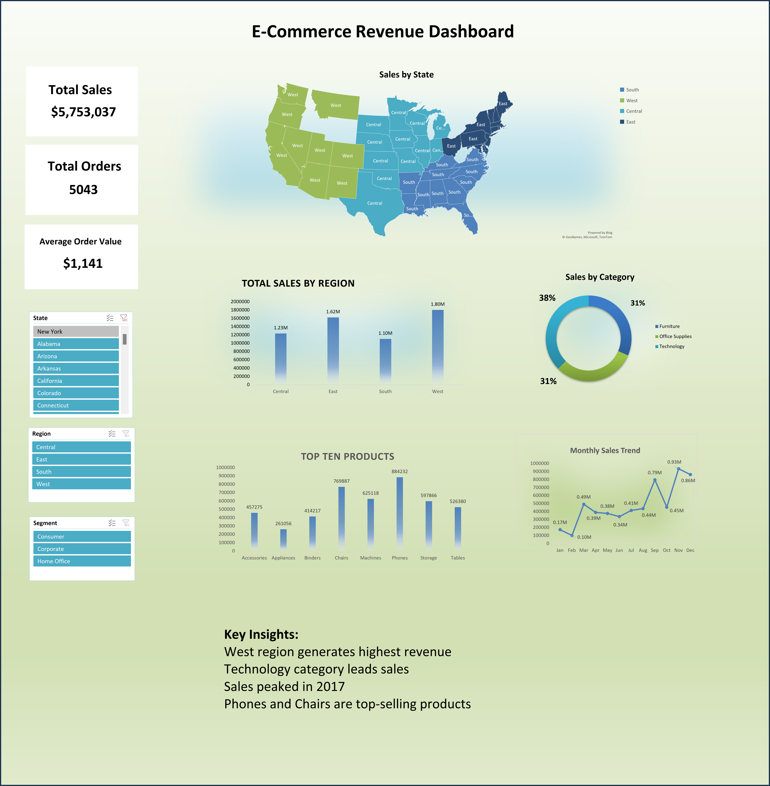

E-commerce Revenue Analysis Dashboard
Project Overview
This project analyzes e-commerce order data to understand revenue performance,
regional trends, and product demand. An interactive Excel dashboard was created
to visualize key metrics such as total revenue, sales trends, and top-performing
categories.
Dataset
The dataset contains order-level information including order date, category,
region, quantity sold, and revenue.
Data Cleaning
During validation, the "Profit" column was identified as revenue
(unit price × quantity). The column was renamed to ensure accurate
business interpretation.
Dashboard

Key Insights
- Technology category generated the highest revenue.
- West region contributed the most sales.
- Sales showed strong growth in the last quarter.
- Some sub-categories dominate revenue contribution.
Business Recommendations
- Increase stock and marketing for high-performing categories like Technology.
- Focus marketing campaigns in the West region to maximize ROI.
- Prepare inventory and promotions ahead of Q4 to capture peak demand.
- Identify low-performing categories and optimize pricing or discontinue them.
Tools Used
- Microsoft Excel
- Pivot Tables
- Interactive Dashboard
- Data Cleaning